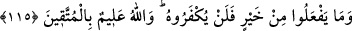

Çünkü bir şeye rağbet eden, onu elinde bulundurmak için koşuşturur; sonraya
bırakmaktansa hemen yapmayı tercih eder. “Gerek sadece kendilerini ilgilendiren,
gerekse başkalarına da yararı olan bütün hayırları işlemeye tam bir rağbetle
koşuştururlar” demektir. Bu ifade de, kitap ehlinin hayırlı işlerde çok ağır
davrandıklarına hattâ şer için koşuşturduklarına târizde bulunmaktadır.
“İşte” bu özellikleri taşımaları sebebiyle, “onlar” bu üstün sıfatlarla tavsîf edilenler
de “iyilerdendir.” Allah katında durumu iyi olan ve Allah’ın rızâ ve övgüsüne mazhar
olanlardandırlar.
115. Onların yaptıkları hiçbir hayır karşılıksız bırakılmayacaktır. Allah, takvâ
sahiplerini çok iyi bilir.
İster zikredilen hayırlardan olsun, ister olmasın “yaptıkları hiçbir hayra nankörlük
edilmeyecektir.”; sevabı azaltılmayacak, zâyî edilmeyecektir. Hayrın sevabının
verilmemesi veya az verilmesine nankörlük etme anlamında küfrân denilmiştir. Oysa
Allah’a küfrân (nankörlük) izâfe edilemez. Çünkü hiçbir kimse Allah’a bir nîmet
bahşetmemiştir ki, Allah o nîmete nankörlük etsin. O halde bunun, nankörlükle
adlandırılması, Cenâb-ı Hakk’ın mükâfat ve sevap vermeyi “şükr” diye adlandırmasına
göredir. Çünkü, Allah Teâlâ; “Allah şükredici ve alîmdir.” (el-Bakara, 2/158)
buyurmaktadır. Sevabı tam olarak vermekten mecâzen “şükran” diye bahsedilince
“küfran” da, sevap vermemekten mecâz kılınmıştır.
“Allah korunanları bilmektedir.” Bu ifade, muttakîlere çok sevap verileceğine dâir
verilen bir müjdedir. Ayrıca, bütün güzel amellerin ve hayırlı davranışların temelinde
takvânın bulunduğunu; Allah katında sadece takvâ sahiplerinin kurtuluşa erdiğini
bildirmektedir.
“Yaptıkları hiçbir iyiliğe nankörlük edilmeyecektir.” Kendilerini Allah’a
yaklaştıracak her iyiliği, onların Allah’a yaklaşmasından daha çok, Allah onlara
yaklaşarak kabul edecek ve karşılığını verecektir. Çünkü hadîs-i kudsîde Cenâb-ı Hak,
“bana bir karış yaklaşana ben bir arşın yaklaşırım” buyurur.[94] Ayrıca; “Ben beni
zikredenin dostuyum; bana şükredenin yoldaşıyım; bana itâat edene ben de itâat
ederim.” buyurur.[95] Kabiliyetlerinizi ve bana doğru yönelme tarzınızı saflaştırdığınız
gibi, ben de bu kabiliyet ve yönelişinize göre size yönelip feyz akıtarak icabet ederim,
buyurur.
“Allah korunanları bilmektedir.” Allah’la kendi aralarında perde olan şeylerden
uzaklaşarak bu perdelerin ortadan kalktığı oranda Allah’ın kendilerine tecellî ettiği
kişileri Allah bilmektedir.